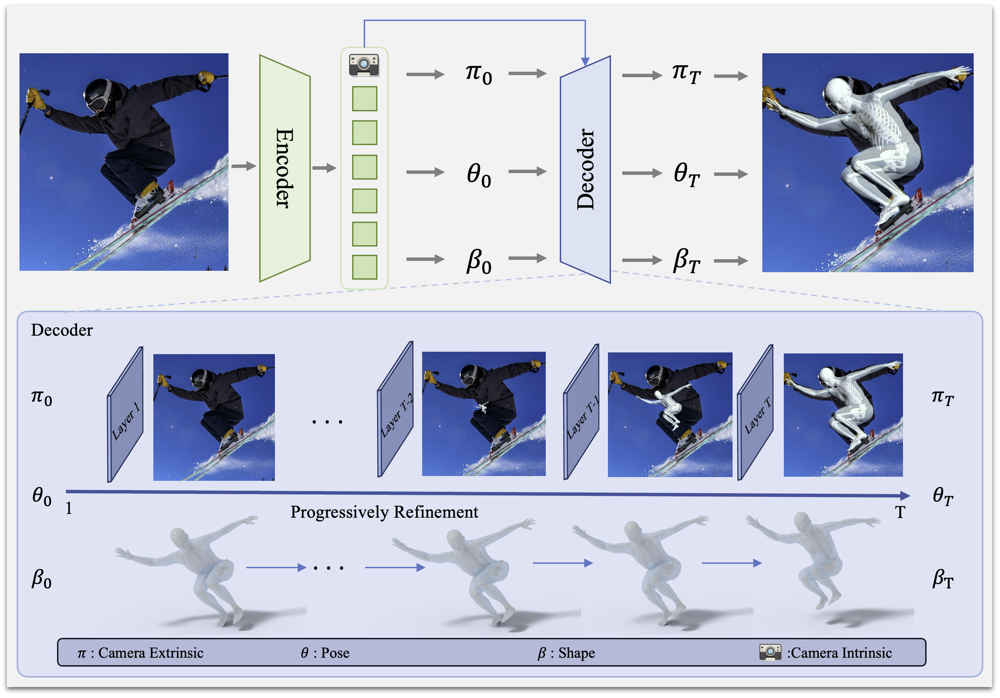

Abstract

Parametric 3D human models such as SMPL have driven major advances in human pose and shape estimation, yet their simplified kinematics limit biomechanical fidelity. The recently proposed SKEL model addresses this by re-rigging SMPL with an anatomically realistic skeleton. However, estimating SKEL parameters directly remains challenging due to limited training data, perspective ambiguities, and complex human articulation.
We introduce SKEL-CF, a coarse-to-fine SKEL estimation framework that enables robust biomechanical human modeling from images. We adopt a transformer-based encoder–decoder architecture in which the encoder predicts coarse camera, SKEL parameters, and the decoder progressively refines them. To provide anatomically reliable supervision, we convert SMPL-based datasets into SKEL-consistent ground truth, ensuring unified skeleton–mesh alignment. To further resolve depth and scale ambiguities, we explicitly model the camera within the SKEL-CF pipeline and demonstrate its importance with diverse viewpoints.
Extensive experiments show that SKEL-CF significantly advances practical SKEL estimation in the wild. On the challenging MOYO dataset, SKEL-CF achieves 85.0 MPJPE / 51.4 PA-MPJPE, outperforming HSMR (104.5 / 79.6). Our framework enables scalable and anatomically realistic human motion analysis, bridging computer vision and biomechanics applications. Our code will be released upon publication.
Method
Overview of the proposed SKEL-CF. Our method estimates SKEL parameters from a single image using an encoder–decoder architecture that performs coarse-to-fine estimation. The encoder produces initial predictions of the camera extrinsics π, shape parameters β, and pose parameters θ. The decoder then refines these predictions progressively across layers. In addition, we adopt the camera model from CameraHMR to estimate the camera intrinsics.
Visual Comparison

Visual comparison between the proposed SKEL-CF and HSMR. Our proposed SKEL-CF achieves more precise skeletal estimations (best viewed in zoom).

Visual comparison between the proposed SKEL-CF and CameraHMR. The proposed SKEL-CF is built upon the SKEL representation, which enforces anatomically consistent joint motion, resulting in more natural pose predictions compared to the SMPL-based CameraHMR (best viewed in zoom).